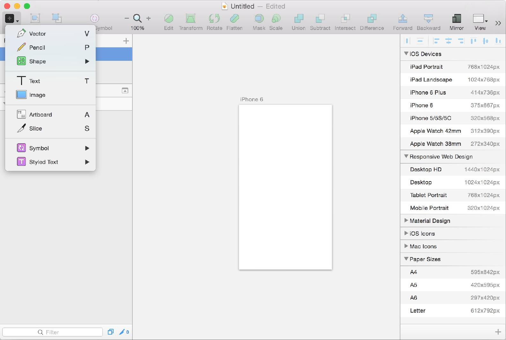
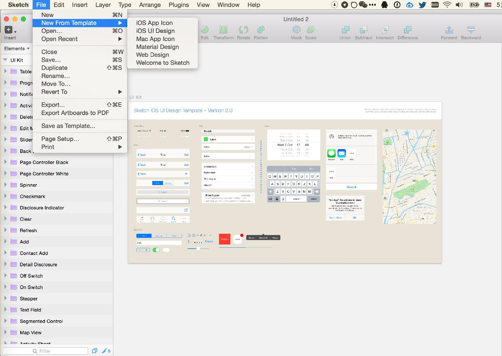
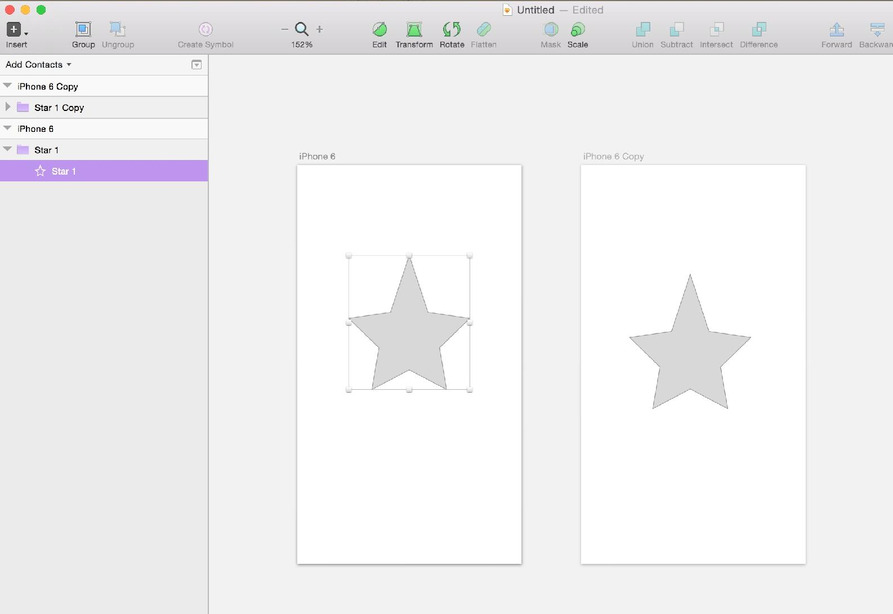
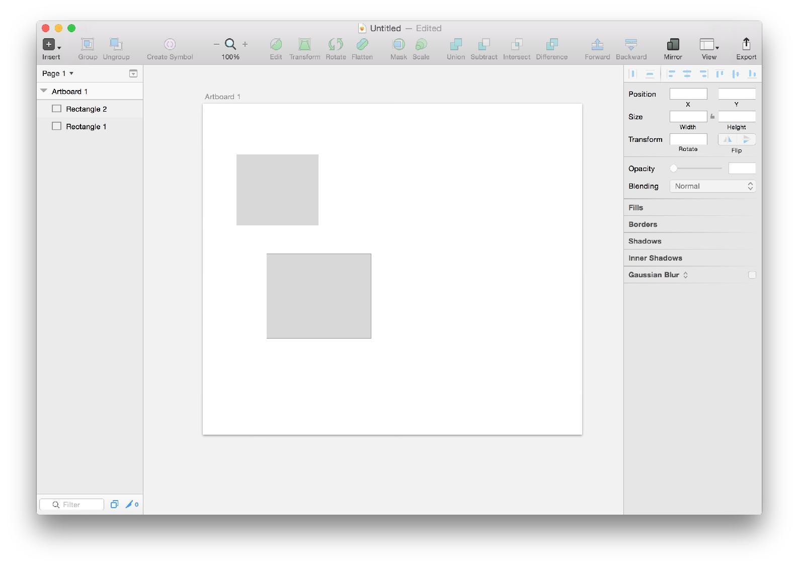
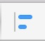
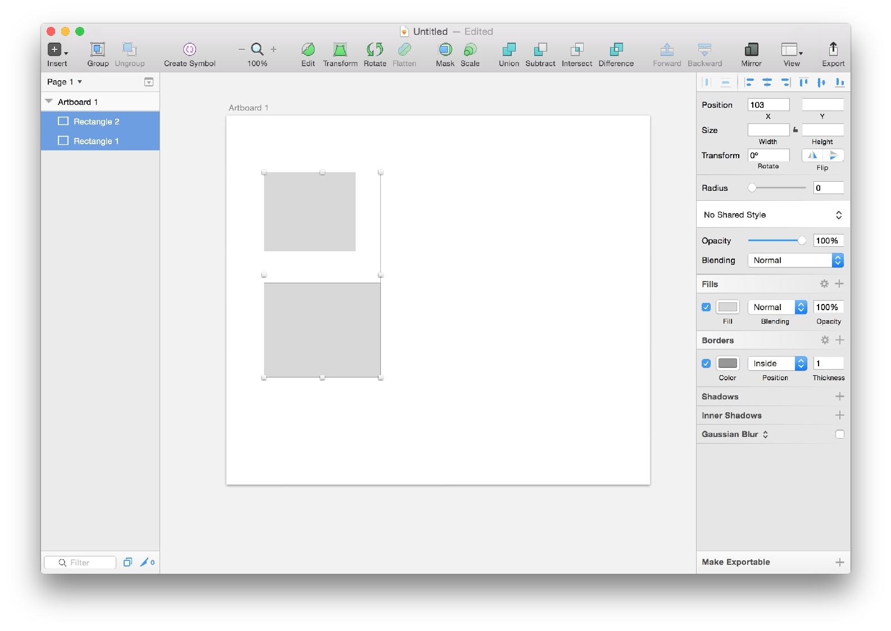
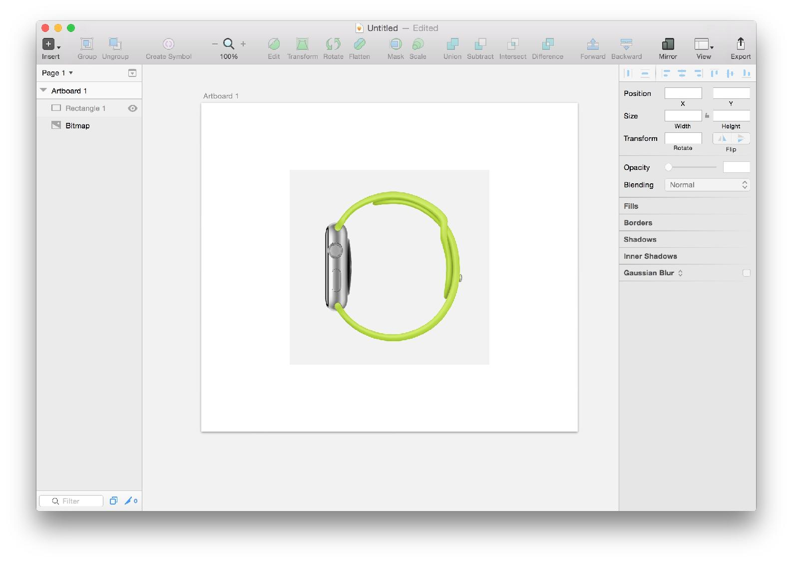
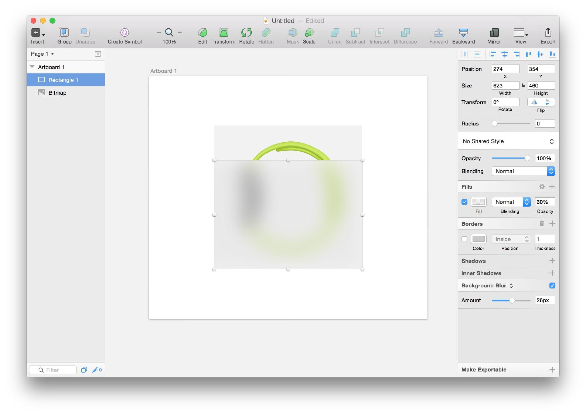

Sketch 项目的结构分为两级
这种针对移动端特别优化的结构非常合理，例如你的 App 有一个添加好友的流程 那么你可以新建个 Page 叫做 Add Contacts，然后每个步骤用一个 Artboard。
点击左上角的 加号 可以添加 Artboard，也可以按下 快捷键 A 来添加，右边 Sketch 内置了各种设备的尺寸，无数贴心的设计使得 Sketch 无可厚非的成为移动设计的王者。

如果 Artboard 已经让你欣喜不已，那么模版功能就会让你立刻爱上这款软件，Sketch 内置了多种操作系统的 UI 模版，你可以快速组装出来自己界面的基础架构。

Sketch 有 Edit, Transform, Rotate, Faltten 四种基本元素编辑的方式。
选中元素后点击 Edit，元素立刻就会显现出曲线的原型，编辑元素曲线可以创造任意你想要的形状。
Transform 可以对元素的三围角度产生形变。
Rotate 则可以旋转元素。
Flatten 则可以基于你改造后的元素重建外框为规则矩形，这个功能可能要你亲自在 Sketch 里尝试下才能深刻理解。
Mask 是一个非常重要的功能，当你想制作圆形头像的时候，很可能是你有一个圆形，一个正方形的照片，那么就要用圆形 Mask 这张照片，就可以看到一张圆形的头像。 刚才的图形 Mask 一张照片，就可以产生这样的效果。
一个 App 里面往往有很多元素是通用的，你肯定不希望每次都要逐一修改，这就是 Symbol 产生的原因。
我创建了两个 Artboard，并且给第一个插入了一个星星，然后设置为 Symbol，然后复制这个星星到另外一个 Artboard，当我编辑一个星星的时候，另外一个会产生同样的变化。

这些只是 Sketch 非常基础的使用方法，当你深入学习之后， Sketch 会成你手上爱不释手的神器。
快捷对齐是 Sketch 里非常实用的一个功能，你在界面设计的时候会大量使用这个功能。

例如上图我们有两个矩形元素，希望他们左对齐，普通的做法可能是拖拽下面的那个然后对齐上面那个。
高端的呢？
同时选中两个矩形，点击右上角的左对齐标志

然后我们的奇迹就诞生了

iOS 的 Blur 效果在 Sketch 里实现起来非常简单——因为已经内置了
例如我想要挡住下图中的苹果表

只需要新建一个矩形，放置在这个图片上，然后把右侧边栏上的 Gaussian Blur 换成 Background Blur 即可。

别忘了调整 Amount 和 Fills 里的 Opacity 来改善效果。
在下一章节里，我们将使用 Sketch 绘制一个 Wunderlist 来深入了解 Sketch。